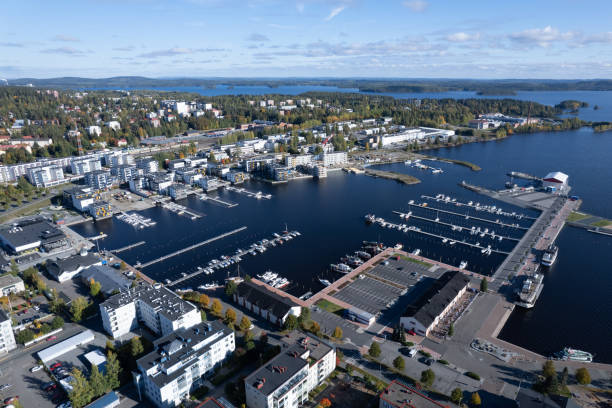

Tervetuloa!

Lappeenrannan liikenneyhteydet ovat Karjalan rata, valtatie 6 ja Lappeenrannan lentoasema. Karjalan rataa pitkin liikennöivät Pendolinot ja valtatietä 6 venäläiset rekkajonot, joten Lappeenrannan lentoasema on näistä nopeista vaihtoehdoista äkkipikaisin matkustaessa kaljanhakureissulle Saksaan, seksilomalle Latviaan tai muuten vain vaikkapa Ouluuun. Liikenneyhteyksiin kuulumaton matkailunähtävyys hiekkalinna kerää joka kesä useita tuhansia ihmisiä ihmettelemään isoa kasaa santaa, mistä on tehty poliitikkojen rintakuvia sokeiden riemuksi. Muuta toimivaa hiekkalaatikkoa ei sitten Lappeenrannasta tai sen metsistä enää löydetäkään.
| Osasto | Budjetti 2025 (€) | Budjetti 2026 (€) | Budjetti 2027 (€) | Budjetti 2028 (€) |
|---|---|---|---|---|
| Koulutus | 120,000,000 | 125,000,000 | 125,000,000 | 125,000,000 |
| Terveydenhuolto | 200,000,000 | 210,000,000 | 125,000,000 | 125,000,000 |
| Infrastruktuuri | 80,000,000 | 90,000,000 | 125,000,000 | 125,000,000 |
| Kulttuuri ja vapaa-aika | 30,000,000 | 35,000,000 | 125,000,000 | 125,000,000 |